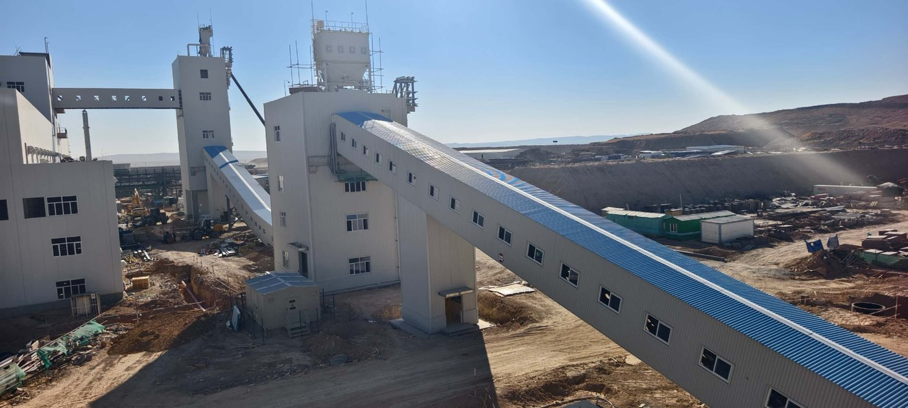
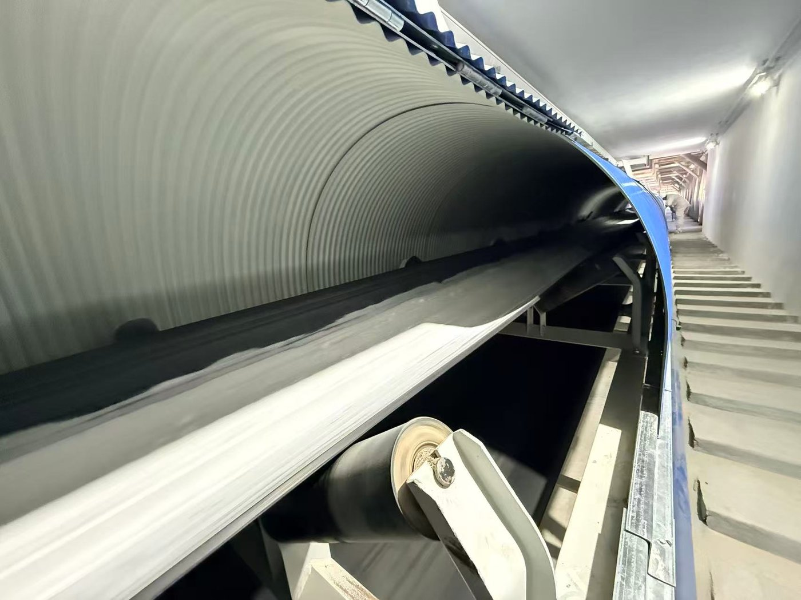
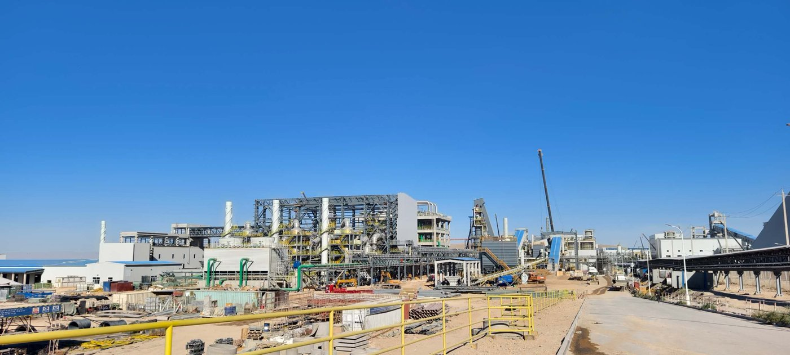

The EuroChem chemical complex in the Zhambyl Region of Kazakhstan is one of the largest industrial investments in Central Asia — a full-cycle phosphate operation built in phases from the Karatau phosphorite deposit through to more than one million tonnes a year of mineral fertilizers and associated products. Behind those headline numbers sits a bulk material handling problem measured in hundreds of thousands of tonnes: abrasive phosphate rock has to be moved from mining and crushing to processing and storage, reliably, in a continental climate with hot summers and deep winter frost. Tianyi Machinery supplied the belt conveyor systems for the project. This article sets out the scope, the engineering decisions and the design constraints behind a conveying system built for a fertilizer complex in the Kazakh steppe.
In this article
1. The project: a full-cycle chemical complex in the Zhambyl Region 2. The conveying duty — what has to move, and why it is difficult 3. System architecture: from the crusher to storage 4. Belt conveyor engineering for abrasive phosphate rock 5. Enclosed galleries: weather, dust and structure 6. Transfer points, chutes and dust control 7. Cold-climate and continental-site design 8. Manufacturing, pre-assembly and shipping to a landlocked site 9. Site support and commissioning 10. Why fertilizer and chemical plants choose Tianyi Frequently asked questions1. The Project: A Full-Cycle Chemical Complex in the Zhambyl Region
The project is developed by EuroChem-Karatau LLP at the Karatau phosphorite deposit in the Sarysu district of the Zhambyl (Jambyl) Region, southern Kazakhstan. It has been built in three phases over nearly two decades, and together they form one of the few integrated phosphate complexes in the world where extraction, processing and finished-product manufacture sit in a single production chain.
| Phase | Scope | Status / capacity |
|---|---|---|
| Phase I | Mining and processing complex — phosphate rock extraction and beneficiation | Commissioned 2016; phosphate rock production up to around 840,000 t/y, including a medium-crushing and fine-grinding unit |
| Phase II | Sulfuric acid plant feeding the chemical complex | Launched 2026; 800,000 t/y design capacity |
| Phase III | Chemical complex for mineral fertilizers and industrial products | Scheduled 2027; total output above 1,000,000 t/y — dicalcium phosphate, potassium sulfate, calcium chloride and synthetic gypsum |
- Investment: total project value exceeds US$1 billion, implemented under Kazakhstan's industrialisation programme.
- Engineering: the chemical complex is delivered under an EPC contract with CNCEC, a major Chinese chemical engineering contractor.
- Employment: more than 1,200 permanent jobs once fully operational, with a comparable number in service and logistics companies.
- Environment: the process is designed to avoid phosphogypsum waste, producing synthetic gypsum and calcium chloride as saleable by-products instead.
Every one of those three phases depends on bulk conveying. Ore has to leave the mine and reach the processing plant; crushed and ground phosphate has to move between beneficiation, storage and the chemical trains; solid feedstocks and finished granular products have to be transferred between buildings, silos and load-out. That is the layer of the plant where belt conveyors and their transfer points do the work — and it is the scope Tianyi Machinery supplied.

EuroChem Kazakhstan Conveying System2. The Conveying Duty — What Has to Move, and Why It Is Difficult
A phosphate fertilizer complex is not a single conveying problem. Several distinct material streams pass through the same site, and each one constrains the equipment differently. The table below summarises the duties that shaped this project.
| Material stream | Typical characteristics | Conveying implication |
|---|---|---|
| Run-of-mine phosphorite / phosphate rock | Dense, abrasive, wide lump-size range, dusty when dry | Heavy-duty belt, abrasion-resistant covers, impact-resistant loading points, steep inclines |
| Crushed and ground phosphate | Fine, free-flowing to cohesive, dusty | Fully enclosed conveying, dust extraction at every transfer, sealed chutes |
| Solid feedstocks for the acid and chemical trains | Varied bulk density and moisture, some corrosive or hygroscopic | Material-specific belt compounds, sealing, corrosion protection |
| Finished fertilizer and by-products | Granular to fine, moisture-sensitive, product-grade purity | Gentle transfer, contamination control, clean load-out |
Three site conditions make the duty harder still. First, the material is abrasive: phosphate rock wears belts, chutes and liners, so every wear surface has to be specified for it rather than selected from a catalogue default. Second, the plant is dust-sensitive: fine phosphate and fertilizer products must be contained, both to protect product quality and to meet workplace and emissions limits. Third, the climate is continental: the Zhambyl Region sees hot, dry summers and cold winters with sub-zero temperatures, plus windblown steppe dust — a combination that punishes anything designed for a temperate, indoor plant.
3. System Architecture: From the Crusher to Storage
The conveying system follows the plant's process flow rather than a single straight line. In outline:
Ore receiving → crushing and screening → inclined belt conveying → transfer towers → storage and process feed.
- Receiving and primary transfer: ore is received from the mine haulage and fed onto the first conveyor flight through an impact-resistant loading point with a lined chute and impact idlers or an impact bed.
- Crushing and screening: crushers and screens reduce and classify the rock; the conveyors beneath them are sized for the resulting size band and for the shock of a primary crusher discharge.
- Inclined conveying between buildings: the material is carried up and across the site on long inclined belt conveyors running inside enclosed galleries — the two flights visible in Figure 1. Inclined belt conveying is what lets the plant move large tonnages across a congested site and gain height in the same operation, without trucks and without a separate lift.
- Transfer towers: at each change of direction or elevation, a transfer tower re-loads the material onto the next flight, houses the chute and the dust-extraction connection, and gives maintenance access.
- Storage and process feed: the final flights discharge into silos, bins or stockpiles, or directly into the process feed points of the chemical trains.
4. Belt Conveyor Engineering for Abrasive Phosphate Rock
Specifying a belt conveyor for phosphate rock is not a matter of choosing a width from a table. The following parameters were engineered for each flight on this project.
| Parameter | Engineering consideration |
|---|---|
| Belt width and capacity | Sized from the required tonnes per hour, the bulk density of the material and the lump size — not from tonnage alone. A belt must be wide enough for the largest lumps to travel without wedging. |
| Belt speed | Balanced between capacity and wear. Higher speed carries more material but accelerates abrasive wear at the loading point and generates more dust; for abrasive rock the design leans towards moderate speed and greater width. |
| Troughing angle | Deeper troughing (35° or 45°) increases capacity for a given width and keeps the load centred on incline and curve sections. |
| Belt carcass and covers | EP or steel-cord carcass for the tension and distance, with abrasion-resistant covers on the carry side. Cover grade is chosen for the actual wear duty, not a generic standard. |
| Incline | Each flight's maximum angle is set by the material's angle of repose and its behaviour on an inclined belt, with a margin so that material does not roll back on start-up. |
| Idlers | Heavy-duty carrying and return idlers, impact idlers or an impact bed under the loading point, and self-aligning idlers on long flights to control belt tracking. |
| Drive and starting | Motor and gearbox sized for the loaded and the starting condition, with soft-start where the inertia of a long, fully loaded belt demands it, plus a backstop to hold the belt on incline and a brake where required. |
| Take-up | Gravity or screw take-up to maintain tension across the full temperature range the site experiences. |
| Safety devices | Belt-sway (misalignment) switches, belt-slip and speed monitoring, blocked-chute detection, pull-cord emergency stops and emergency stop buttons along the gallery, with rip detection on critical flights. |
The engineering effort concentrates at two places: the loading point, where abrasive rock at speed damages belts and liners if the chute geometry and impact protection are wrong, and the inclined section, where the belt must hold its load, track straight and survive the tension cycles of start-up and shutdown.
5. Enclosed Galleries: Weather, Dust and Structure
Every inclined flight on this project runs inside an enclosed gallery rather than on an open structure. An enclosed gallery is a structural enclosure around the belt and its supporting frame, with a roof and side cladding, a walkway, guardrails and lighting. On this site the cladding is the blue profiled sheeting visible in the photographs.
The enclosure does four jobs at once:
- Weather protection: it keeps rain and snow off the belt, which prevents wet, sticky material, belt slip and the freeze-thaw problems that plague open conveyors in a continental climate.
- Dust containment: fine phosphate and dust from transfer points stay inside the gallery instead of escaping to the site, so emissions and housekeeping are both controlled.
- Protection of the belt and material: the belt is shielded from windblown abrasive dust, from UV degradation and from direct sun, all of which shorten belt life.
- Safe maintenance access: the gallery provides a walkway alongside the belt, inspection doors at idlers and drive stations, emergency stops and lighting, so inspection and belt splicing can be carried out without working at height on an open structure.

Conveyor GalleryStructurally, the gallery is designed for the site's wind and snow loads, for thermal movement between summer and winter, and for the vibration of the running conveyor. Corrosion protection is specified for the environment: hot-dip galvanised or coated steelwork, with particular attention to the cut edges, fixings and the joints between modules, which are the first places a steppe site attacks.
6. Transfer Points, Chutes and Dust Control
Most conveyor problems — and most dust — originate at transfer points, not along the belt. At each transfer tower and each discharge, the material has to be re-centred on the receiving belt without spillage, without generating a dust cloud and without wearing a hole in the receiving belt or chute. The design measures applied were:
- Chute geometry: transfer chutes are shaped around the material's discharge trajectory so the stream lands centred and at the same direction as belt travel, rather than being deflected into the belt edge. Chute angles are set above the material's angle of repose so that it cannot build up and block.
- Wear protection: chutes and the loading zone are lined with abrasion-resistant wear plate, with ceramic or hard-faced liners at the highest-wear corners. In a phosphate plant, wear liners are a consumable that must be replaceable quickly.
- Impact protection: impact idlers or an impact bed support the belt at the loading point so that falling rock compresses it instead of cutting or puncturing it.
- Dust extraction: each transfer point is hooded and connected to a dust collector, and the chute itself is sealed. Extracting dust at the point where it is generated is far more effective than trying to capture it after it has escaped.
- Spillage control: skirt rubber and sealing strips keep material on the belt at the loading zone, and belt cleaners at the head pulley return a clean belt to the carry side and prevent carryback along the whole flight.
- Blockage detection: level and motion probes at critical chutes stop the feeding conveyor before a blockage backs up into a fall of material.
7. Cold-Climate and Continental-Site Design
Designing for the Zhambyl Region means designing for a wide temperature range and for windblown dust — not for a temperate indoor plant. The measures applied to the conveying system included:
- Temperature range: components are selected for the site's design range, from hot summer conditions through to deep winter frost. Belt compounds, lubricants, seals and structural steel all have lower temperature limits, and these were matched to the site rather than assumed from a Chinese plant specification.
- Cold-flexible belting: belt cover compounds that stay flexible at low temperature, so that a loaded belt does not crack when it passes over a small-diameter pulley on a cold start.
- Drive units: motors and gearboxes rated for the ambient range, with anti-condensation heaters and appropriate ingress protection so that the drive does not fail on the first cold, damp morning.
- Snow and ice: the enclosed galleries keep snow off the belt, and belt cleaners and correctly designed chutes prevent ice build-up from becoming a blockage.
- Windblown dust: sealing and enclosure keep abrasive steppe dust off bearings, drive parts and the material itself.
- Thermal movement: galleries and long conveyors are detailed to accommodate expansion and contraction across the annual temperature swing.
8. Manufacturing, Pre-Assembly and Shipping to a Landlocked Site
Kazakhstan is landlocked and the site lies far from a port, so the conveying system had to travel by sea, rail and road before it could even be assembled. Three manufacturing decisions made that route practical:
- Factory trial assembly: conveyor sections, galleries and transfer towers are pre-assembled and match-marked in the factory, so that the site team bolts together a set of components that is already known to fit rather than discovering an interference in the field.
- Container and transport modularisation: long flights are split into transportable sections sized for standard containers and for the rail and road limits along the route, with the split points chosen where a joint is simplest to remake accurately.
- Protected packing: components are packed for a long multimodal journey, with machined surfaces and bearings protected and each crate identified against the erection drawing.
9. Site Support and Commissioning
Supply does not end when the equipment leaves the factory. For a project of this size the delivery package includes:
- Erection and layout drawings keyed to the match-marked components, so the site contractor can install without re-engineering.
- Supervision and technical support during installation and alignment, and during the critical first runs of each conveyor.
- Commissioning: no-load and load running, belt tracking adjustment, tensioning, chute and dust-extraction tuning, and checks of all safety devices before handover.
- Operation and maintenance documentation covering inspection intervals, lubrication, belt splicing, wear-liner replacement and parts replacement.
- First-fill spare parts: belt, idlers, liners, drive components and fasteners shipped with the equipment, so that a landlocked site is not waiting on a sea freight for a routine consumable.

EuroChem-Karatau Complex10. Why Fertilizer and Chemical Plants Choose Tianyi
Tianyi Machinery designs and manufactures the full range of bulk material handling equipment that a fertilizer or chemical plant needs: belt conveyors for high-capacity long-distance duty, en-masse chain conveyors for sealed horizontal and vertical distribution, bucket elevators for vertical lift, screw conveyors for short metered transfers, apron conveyors for hot or heavy duty, and the dust collectors, feeders, crushers, screens, valves and spare parts around them.
What a project like EuroChem's Zhambyl complex requires is not a catalogue of individual machines but a single supplier who can engineer them into one working material flow, manufacture them to a common standard, ship them to a remote site as a coordinated package and support the installation. Tianyi has supplied bulk handling equipment to customers in more than 50 countries, and the same engineering discipline that serves a fertilizer complex also serves its other markets — cement, power, mining, metallurgy and new energy.
Frequently Asked Questions
What conveying equipment did Tianyi Machinery supply for the EuroChem Kazakhstan project?
Tianyi Machinery supplied belt conveyor systems for the bulk material handling lines at the EuroChem chemical complex in the Zhambyl Region, including long inclined belt conveyors running in enclosed galleries, the transfer towers between flights, chutes with abrasion-resistant liners, and the associated dust control, drives, safety devices and spare parts.
Why are belt conveyors used for phosphate rock instead of chain or screw conveyors?
Phosphate rock is abrasive, dense and variable in lump size, and it has to be moved in large tonnages over long distances with changes in elevation. A troughed belt conveyor handles that duty with the lowest energy consumption per tonne-kilometre, tolerates coarse lumps and accepts the wear that abrasive rock causes through replaceable belt covers and liners. Chain and screw conveyors are better suited to shorter, sealed or metered duty rather than main-line bulk transfer.
How is a conveyor system designed for Kazakhstan's cold winters?
Belt compounds are selected to stay flexible at low temperature, motors and gearboxes are rated for the full ambient range with anti-condensation heaters and suitable ingress protection, lubricants and seals are matched to the design temperature, and inclined flights run inside enclosed galleries so that snow and ice never reach the belt. Chutes are shaped to prevent ice build-up from turning into a blockage.
What is an enclosed conveyor gallery and why is it used?
An enclosed conveyor gallery is a roofed and clad structure built around a belt conveyor, with a walkway, guardrails and lighting. It keeps rain and snow off the belt, stops dust from transfer points escaping to the site, shields the belt from windblown abrasive dust and UV, and gives safe access for inspection and maintenance. On a dusty site in a continental climate it is the standard way to run a long inclined conveyor.
How is dust controlled at conveyor transfer points?
Dust is controlled at the point where it is generated. Transfer chutes are sealed and shaped to keep the material stream centred, each transfer point is hooded and connected to a dust collector, skirt rubber and sealing strips close the loading zone, and belt cleaners remove carryback at the head pulley. This combination contains the dust at source instead of letting it escape into the building or the site.
Planning a Conveying System for a Fertilizer or Chemical Plant?
Send us your material specification, process flow, capacities and site conditions — including the climate the plant will operate in. Our engineering team will propose a complete conveying scope: belt conveyors, en-masse chain conveyors, bucket elevators, screw conveyors, feeders, dust collectors, valves, crushers and screens, engineered as one material flow.
Request a Conveying System Proposal